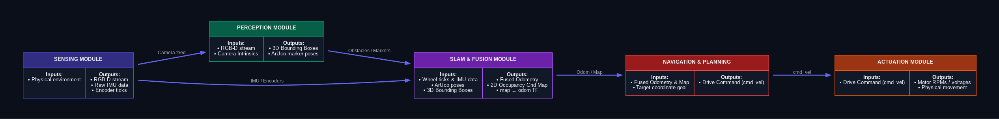
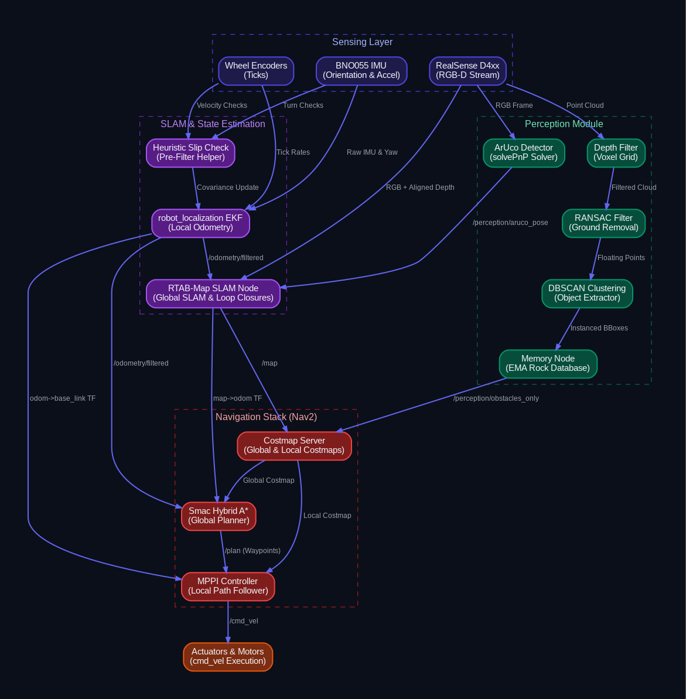
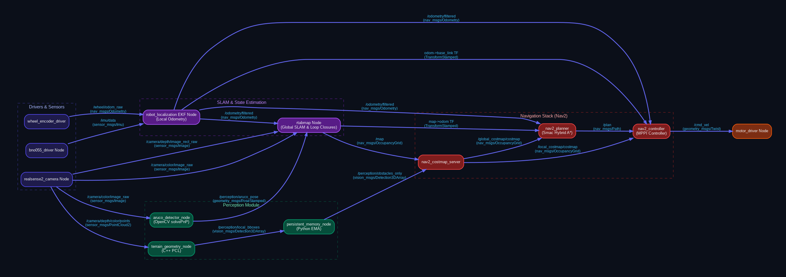

ERC Rover Autonomous Navigation System
Complete Autonomous Architecture: Perception, SLAM, and Path Planning
European Rover Challenge (ERC) Context
The European Rover Challenge (ERC) is an international space-robotics competition simulating Mars exploration. The Navigation (Traverse) Task requires the rover to autonomously traverse a complex Mars Yard, seeking pre-defined coordinate waypoints while avoiding geological hazards.
The Importance of Full Autonomy
Scoring is heavily weighted by the level of autonomy. Full autonomy (zero operator feedback and zero video stream) awards the maximum possible points. Teleoperation or live intervention incurs severe point penalties. Thus, the onboard software stack must be self-reliant, fail-safe, and capable of real-time hazard mitigation.
Critical Environmental Constraints
- No GPS: Traditional GNSS is unavailable or heavily penalized. The rover must rely on relative localization (Wheels + IMU + Cameras).
- ArUco Navigation Aids: The competition environment features artificial visual markers (ArUco tags) placed at known surveyed coordinates. These provide absolute correction to combat relative sensor drift.
- Dynamic, Rough Terrain: Loose sand, steep slopes, craters, and boulders require kinematic awareness to prevent slippage, rollover, and collision.
System Pipelines & Architecture Flowcharts
The system's architecture is represented in three visual flowcharts: first as a high-level blackbox flow indicating input/output boundaries of each module, second as a detailed functional pipeline displaying algorithmic operations, and third as a topic-based flow mapping the exact ROS 2 topics and coordinate frames bridging the subsystems.
1. High-Level Blackbox Architecture Diagram
This flowchart highlights the basic module boundaries and the explicit inputs/outputs inside each block.

2. Detailed Subsystem Pipeline Diagram
This flowchart shows the internal algorithms (e.g. RANSAC, DBSCAN, EMA, MPPI) and precise block-level data flows.

3. ROS 2 Topic & Transform Data Flow Diagram (FlowWTopics)
This flowchart maps the exact ROS 2 topic names and coordinate TF transforms linking drivers, perception, Saif SLAM, and planning.

Onboard Software Modules
1. Perception Module
Responsible for processing raw visual feeds and building a geometric model of local obstacles.
- Input: Aligned Depth, RGB Image, Camera Calibration Info.
- Ground Filtering: Uses downsampled point clouds. RANSAC finds the ground plane (slopes/dirt) and filters it out.
- Clustering (DBSCAN): Groups remaining 3D points into distinct 3D boxes (obstacles).
- Memory Node: Prevents the rover from forgetting obstacles when it turns away. Uses Exponential Moving Average (EMA) to keep broadcasting persistent obstacle markers to the planner.
- ArUco Node: Performs OpenCV Perspective-n-Point (PnP) translation of detected tags to find absolute 6-DOF coordinates.
- Output: `vision_msgs/Detection3DArray` (Obstacles), `geometry_msgs/PoseStamped` (Tag Pos).
2. SLAM & Fusion Module
Computes the rover's position and coordinates the mapping database using Option B (Separate EKF + RTAB-Map).
- Input: Wheel ticks, IMU Quaternions, visual odometry, and detected ArUco poses.
- State Fusion (Local EKF): Merges wheel ticks and IMU data inside `robot_localization` to publish smooth, high-frequency `/odometry/filtered` (100 Hz).
- Global Mapping & Loop Closure (RTAB-Map): Processes visual inputs against EKF odometry. Detects previously seen visual regions (loop closures) to update the global `map -> odom` transform offset.
- ArUco Drift Correction: Visual marker coordinates are processed by OpenCV PnP. Detected poses are fed to SLAM to run absolute coordinate resets, eliminating accumulated odometry drift.
- Heuristic Slip Check: An independent logic node compares wheel linear speeds and differential turn rates against IMU accelerations and gyroscope yaw rates. If a discrepancy is detected, it raises wheel covariance in the EKF, making it ignore wheel slips.
- Output: `/odometry/filtered` and `/map`.
3. Global Planner
Calculates a kinematically feasible route to target waypoints.
- Input: `/map` grid, `/odometry/filtered`, and `/goal_pose`.
- Algorithm: Smac Hybrid A* (considers position and orientation: x, y, θ).
- Kinematic Awareness: Plans trajectories modeling Reeds-Shepp kinematics to respect the rover's physical turning limitations. Avoids making steering demands the chassis cannot fulfill.
- Output: `/plan` (Array of waypoint paths).
4. Local Planner (Controller)
Executes active obstacle avoidance and tracks the global path in real-time.
- Input: `/plan`, local costmap, `/odometry/filtered`.
- Algorithm: Model Predictive Path Integral (MPPI).
- Trajectory Sampling: Simulates thousands of candidate trajectories on the Jetson GPU, scoring them based on collision risk, deviation from the path, and terrain cost.
- Output: `/cmd_vel` (Velocity and steering signals sent directly to the motor driver).
Sensor Details & Coordinate Transforms
To prevent localization conflicts, the relationship between coordinate frames must be strictly structured. The table below outlines the core sensor properties, followed by the coordinate transform responsibilities.
Onboard Sensors and I/O Properties
| Sensor Type | Connection Type | Output Frequency | Primary Task |
|---|---|---|---|
| Intel RealSense D4xx | USB 3.0 | 15 - 30 Hz | 3D point clouds, visual odometry, ArUco tag identification. |
| Bosch BNO055 IMU | I2C / Serial | 100 Hz | High-speed orientation (Quaternions) and rotational velocities. |
| Wheel Encoders (4x) | GPIO / CAN Bus | 50 - 100 Hz | Relative linear velocities (wheel tick tracking). |
Transform (TF) Tree Distribution
Coordinate frame propagation is distributed as follows to ensure seamless path planning:
- `base_link` → `camera_link` / `imu_link`: Fixed static transforms. Calibrated once and broadcasted by `robot_state_publisher`.
- `odom` → `base_link`: High-frequency relative transform (100 Hz) broadcasted by the **EKF Node**. Keeps local movements continuous and fast.
- `map` → `odom`: Lower-frequency absolute correction transform (1 - 5 Hz) broadcasted by the **Mapping Node** (RTAB-Map). Compares camera data against past loops or ArUco markers to shift the coordinate grid and cancel drift.